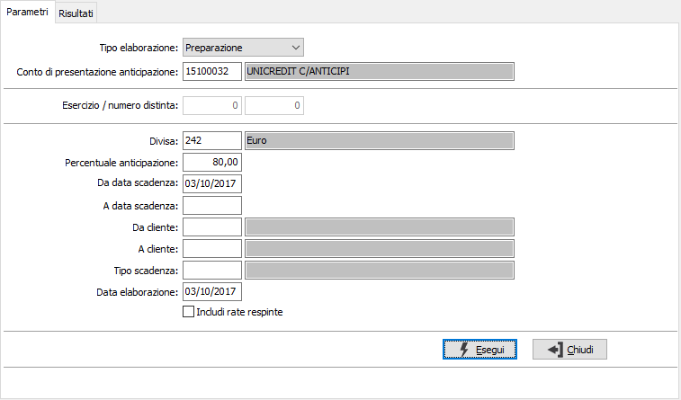
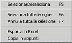
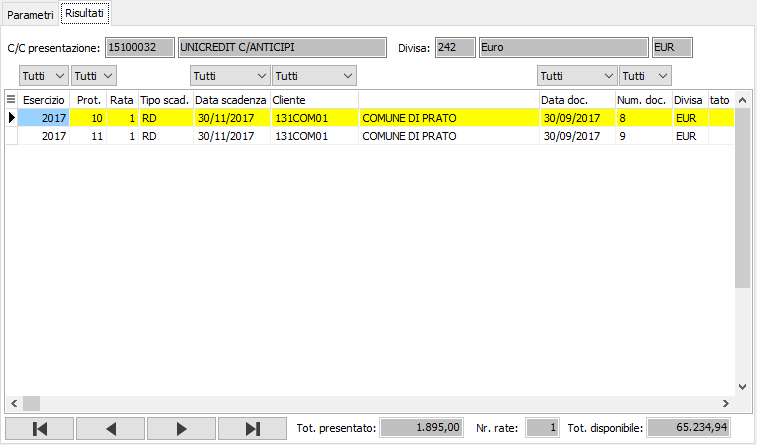

Gestione distinta
La procedura consente di preparare e manutenere le distinte di anticipazione da presentare all’istituto di credito tramite un elenco valori “Tipo elaborazione”.
Preparazione distinta: tramite questa funzione è possibile selezionare, per conto anticipi, le rate relative alle fatture dei clienti da presentare; i limiti di selezione comprendono il codice divisa che sarà obbligatoriamente quello del conto anticipi se tale conto non tratta il controvalore, la percentuale di anticipazione che proposta in base a quanto indicato sulle condizioni del conto, l’intervallo di data scadenza, di codice cliente e di tipologia movimento scadenze. Le uniche tipologie che si possono presentare sono “RD” – rimessa diretta – e “BO” – bonifico. Infine è possibile includere le rate che sono in stato “respinto” relative a distinte di presentazione appoggiate su un diverso conto anticipi. Tale prestazione è utile nell’ipotesi che si intenda presentare nuovamente un documento / rata a fronte di una bocciatura da parte di un’altra banca. La data di elaborazione in fase di salvataggio sarà utilizzata come data della distinta; qualora il conto di presentazione gestisca i giorni di scadenza questi saranno sommati alla data per determinare il limite massimo di selezione delle rate.
Manutenzione distinta: in questa modalità vengono richiesti gli estremi della distinta, esercizio, numero distinta e conto presentazione.


In caso di presentazione, terminata la selezione, saranno mostrati i risultati in una griglia con cui l’utente potrà inserire dei filtri per ciascuna colonna ed imputare manualmente l’importo richiesto alla banca qualora, per motivi particolari, fosse diverso da quello calcolato dalla procedura che risulta essere il totale disponibile della rata (quindi il saldo al netto ad esempio delle note di credito assegnate alla rata) per la percentuale indicata nella selezione.Con il doppio clic del mouse, o con il menù associato al tasto destro del mouse, è possibile selezionare una o più rate direttamente.
Da evidenziare per quanto riguarda i controlli sollevati in fase di selezione della rata è quello relativo all’incoerenza tra l’importo totale presentato, desunto dalla somma degli importi richiesti delle rate selezionate, con l’importo totale disponibile del conto di presentazione. Tale controllo è scatenato solo se il conto anticipi gestisce l’importo massimo che è un tetto massimo concesso dalla banca al cliente per conto anticipi per presentare i documenti da anticipare. Il valore totale disponibile, che è mostrato in un campo di sola lettura in fase di creazione della distinta, è ottenuto dalla differenza tra il totale dell’importo massimo al netto della somma degli importi presentati nelle distinte relativi a rate elaborate, accettate, accese. In fase di salvataggio la rata passa in stato di “Elaborata”; questo cambio stato riguarda anche le rate che in precedenza erano “respinte” ed incluse nella selezione. Viene infine richiesto se si intende stampare la distinta appena creata / aggiornata.
In caso di manutenzione. se la distinta non è stata stampata in definitivo sarà possibile eliminare la singola rata oppure tutta la distinta; qualora sia stata già effettuata la stampa definitiva potrà essere solo consultata.
In entrambi i casi potremo eseguire la stampa tramite l’apposito pulsante posto nella barra degli strumenti.
